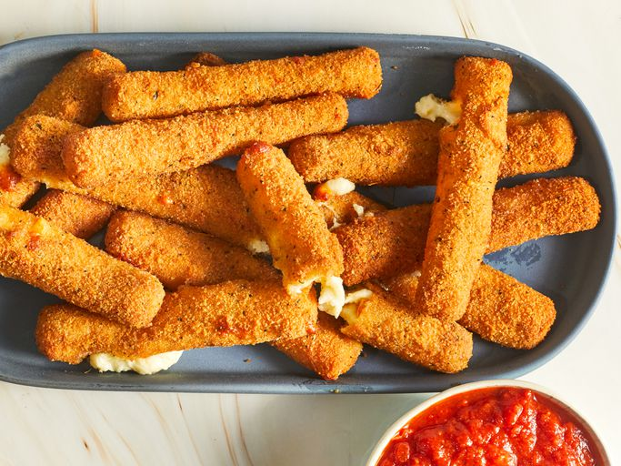

Cheese Sticks Recipe

Description:
Mozzarella sticks are very easy to make at home. They're deep-fried until golden and crispy on the outside,
with melted gooey cheese on the inside. They're so good and take just minutes to fry! Try dipping them in a
marinara sauce!
Ingredients:
- 2 large eggs, beaten
- ¼ cup water
- 1 ½ cups Italian seasoned bread crumbs
- ½ teaspoon garlic salt
- ⅔ cup all-purpose flour
- ⅓ cup cornstarch
- 2 cups oil for frying, or as needed
- 1 (16 ounce) package mozzarella cheese sticks